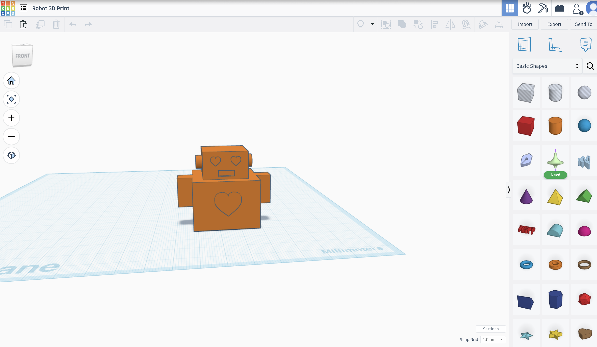

3D Printed Toy Topper
A playful topper modeled in Tinkercad to sit on top of a walking toy, balancing character and stability.
Overview
This project involved designing a small topper that attaches to a walking toy. The goal was to create something fun and expressive while still fitting securely and maintaining balance as the toy moves.
Process
I first blocked out simple shapes in Tinkercad to get the basic proportions and attachment points right. From there, I refined the form, rounded edges, and adjusted the base so it would sit comfortably on the toy. After exporting the model, it was 3D printed and tested in its final form.
What I Learned
Working on this project helped me think more about how digital models translate into physical objects, especially when it comes to fit, weight, and durability.

